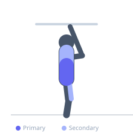
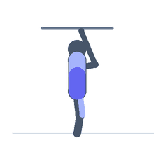

Exercise guide / Windshield Wipers
Windshield Wipers
Windshield wipers are an advanced hanging core exercise performed from a pull-up bar in which the athlete raises both legs to horizontal or above, then rotates them side to side like windshield wipers. The exercise heavily loads the obliques as they both decelerate and produce trunk rotation under a large external moment arm. It also demands significant lat and grip strength to remain stable on the bar throughout.
Primary muscles
internal oblique
external oblique
Secondary muscles
rectus abdominis
iliacus
psoas major
latissimus dorsi
Stabilizers
flexor carpi radialis
flexor carpi ulnaris
Equipment
Pull-Up Bar (Doorframe)
Optional
Pull-Up Bar (Freestanding Tower)
Pull-Up Bar (Wall-Mounted)


Starting position
- Hang from a pull-up bar with an overhand grip, hands shoulder-width or slightly wider apart. Arms fully extended, body hanging straight.
Setup
- Use a sturdy pull-up bar capable of supporting dynamic swinging loads. Chalk or straps may be used for grip.
Steps
- Step 1: Hang from the bar with straight arms in a dead hang position.
- Step 2: Raise both legs simultaneously until they are perpendicular to the torso (horizontal or above).
- Step 3: Keeping legs together and straight, rotate the legs to one side as far as controllable, ideally toward the bar.
- Step 4: Return through center and rotate to the opposite side — one complete repetition.
- Step 5: Continue alternating sides for the prescribed reps, controlling the rotation throughout.
Coaching cues
- Legs stay locked together and straight
- Drive the rotation from your obliques, not your hips swinging
- Return to center before each rotation — no rebounding
Breathing
- Exhale as you rotate to each side. Inhale as you return through center.
Range of motion
- Legs should ideally reach toward the bar at the top position. Rotation should bring the legs toward the bar on each side.
Tempo
- 2–3 seconds per rotation side. Control is essential — never use swing momentum.
Common mistakes
- Bending the knees to reduce the lever arm — this reduces core demand significantly
- Using hip flexor swing momentum rather than oblique-driven rotation
- Letting the body swing and rotate as a whole, losing bar stability
Safety
- Requires strong hanging and core prerequisites. Train toes-to-bar first.
- Grip failure is a risk — use chalk or straps if needed.
Training
- strength: 5–10 reps
- strength: 3–4 sets
- Rest: {'strength': 120}